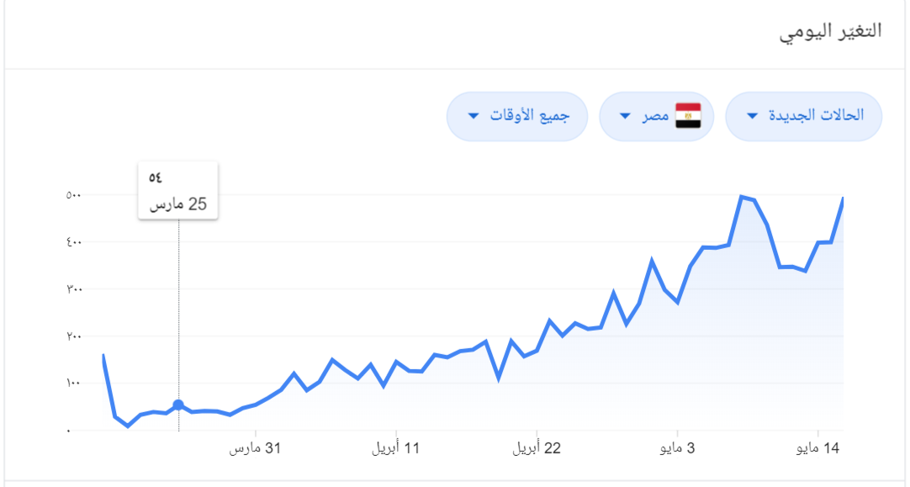

Computer Engineering Role in COVID-19 Pandemic
Links:
Results
As a result of what China has developed and done in the field of technology to treat the coronavirus, which threatens all of humanity, China has become one of the countries in which the spread of the Corona virus has been less than it was in the first place among the most vulnerable countries such as America, Italy and Germany, and China was able to save its people and save the Chinese economy from collapse. Now the whole world hopes from China that it will be able to find the vaccine or medicine for this dangerous virus that has killed a lot and infected many and harms millions.

Corona stats in 18-may-2020
| Geographical location |
Confirmed cases |
recovery cases |
The deaths |
| egypt |
12,229 |
3,742 |
630 |
| USA |
1.52 million |
281k |
89,932k |
| russia |
282k |
67,373 |
2,631 |
| UK |
244k |
- |
34k |
| Brazil |
241k |
94k |
16k |